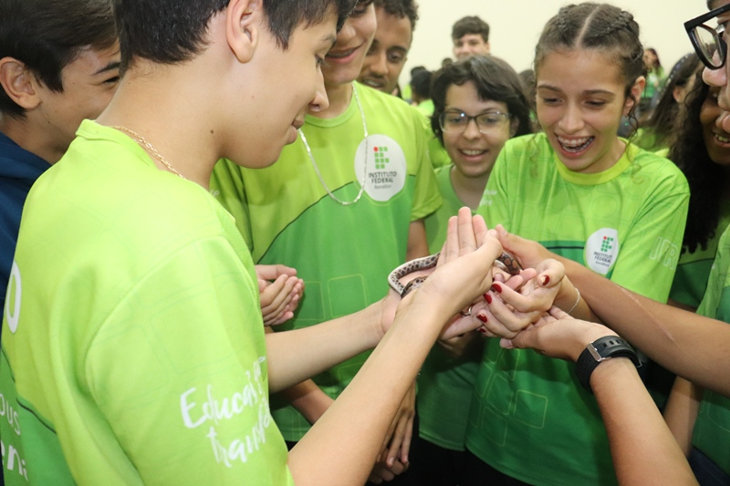
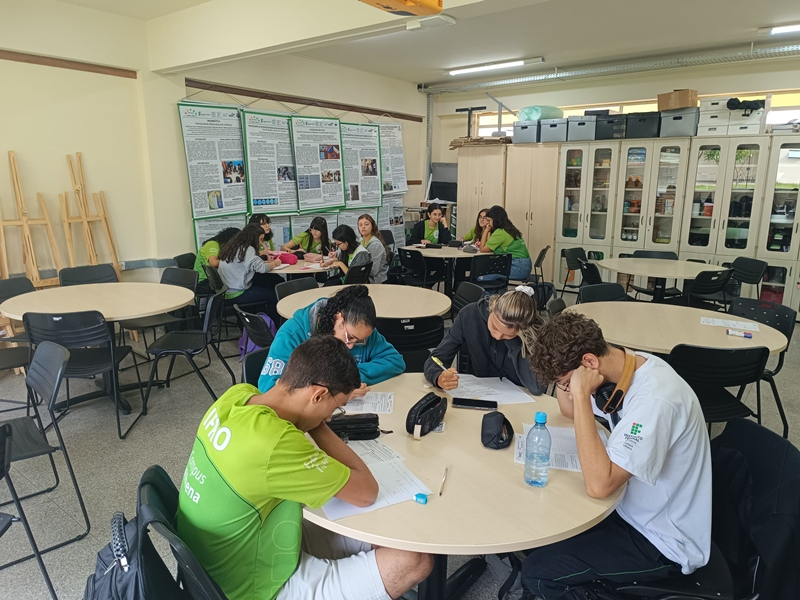
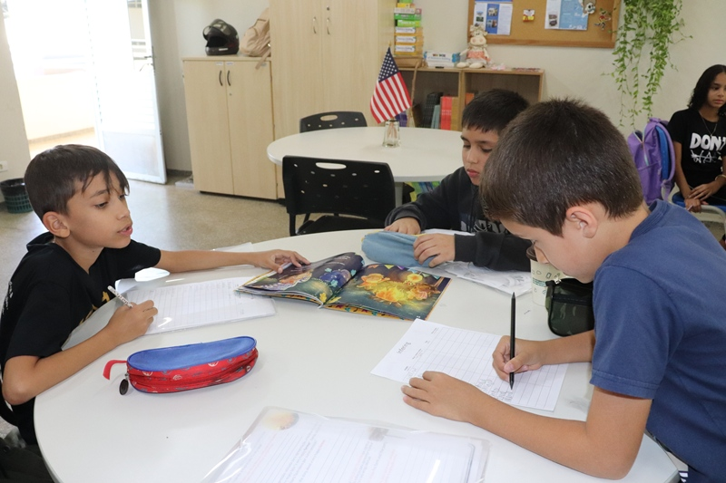
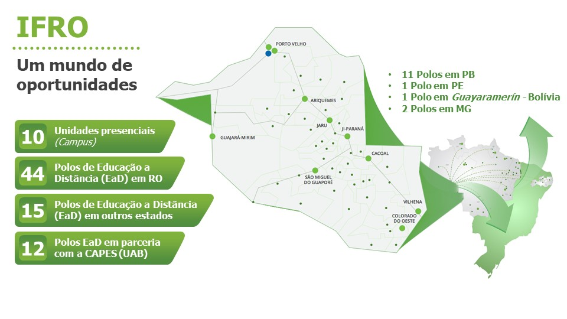

Notícias

Parcerias
IFRO e Neoenergia Cosern promovem webinar sobre chamada de projetos
Evento apresentou oportunidades de parceria e lançou edital para submissão de propostas inovadoras
Há 4 horas, 8 minutos

Oportunidade
IFRO lança edital para seleção de projetos de PDI em parceria com a Neoenergia Cosern
Submissão de propostas de Pesquisa, Desenvolvimento e Inovação (PDI) está aberta até o dia 22 de agosto
Há 4 horas, 32 minutos

Implantação
IFRO oficializa início das obras de ampliação do Campus
Solenidade reuniu autoridades e comunidade local para assinatura da Ordem de Serviço
Há 5 horas, 1 minuto

Capacitação
Aberto período de inscrição para seleção de mestrado em processos de aprendizagem
Processo é fruto de parceria com a UFRN
Há 6 horas, 49 minutos
Conheça nossos cursos
Você sabia que o IFRO tem 223 cursos gratuitos?
Medicina veterinaria
Matemática
Arquitetura e Urbanismo
Zootecnia
Processos seletivos
Mais de mil vagas.
Não iniciada
Hoje
Em andamento
Finalizada
Campus Vilhena
Graduação de Analise e Desenvolvimento de Sistemas
01/08
Inscrições
10/08
Análise de documentos
15/08
Resultado preliminar
Edital nº 08/2025
Campus Vilhena
Graduação de Matemática
01/08
Inscrições
10/08
Análise de documentos
15/08
Resultado preliminar
Edital nº 08/2025
Campus Vilhena
Curso de Eletromecânica
01/08
Inscrições
10/08
Análise de documentos
15/08
Resultado preliminar
Edital nº 08/2025
Campus Vilhena
Curso de Informática
01/08
Inscrições
10/08
Análise de documentos
15/08
Resultado preliminar
Edital nº 08/2025
Nossos campi
Territorialmente, o Instituto Federal de Rondônia está presente em vários municípios do estado, ofertando Educação presencial em 11 (onze) unidades, sendo 01 (uma) Reitoria, 09 (nove) Campi e 01 (um) Campus Avançado, 44 polos em parceria com prefeituras e 12 polos em parceria com a CAPES (UAB) no Estado de Rondônia, 11 polos em Paraíba, 1 polo em Pernambuco, 2 polos em Minas Gerais e 1 um polo internacional em Guayaramerín - Bolívia.
